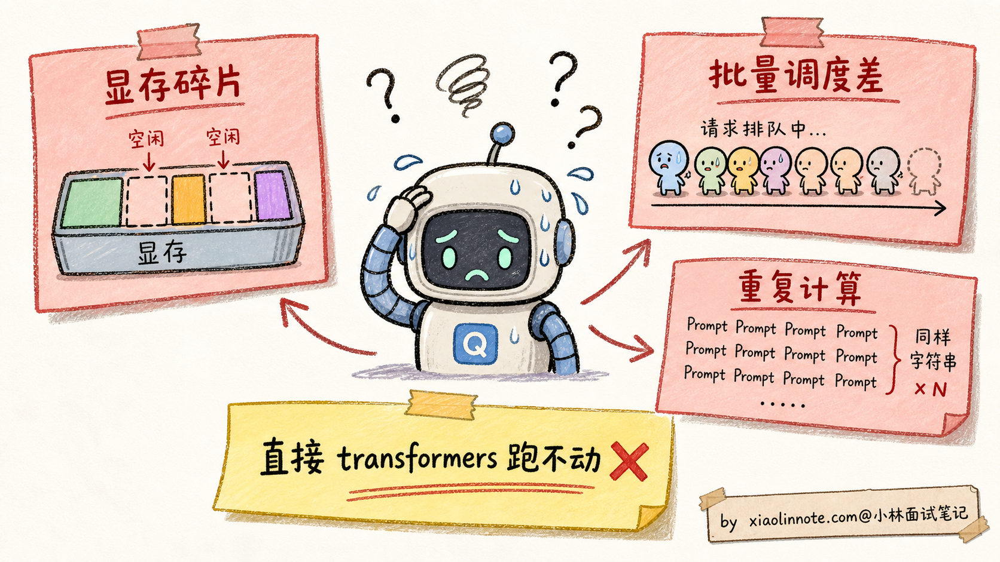
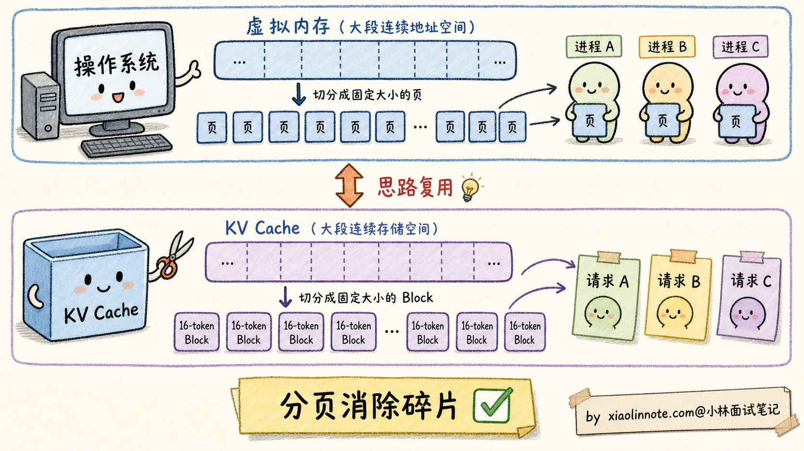
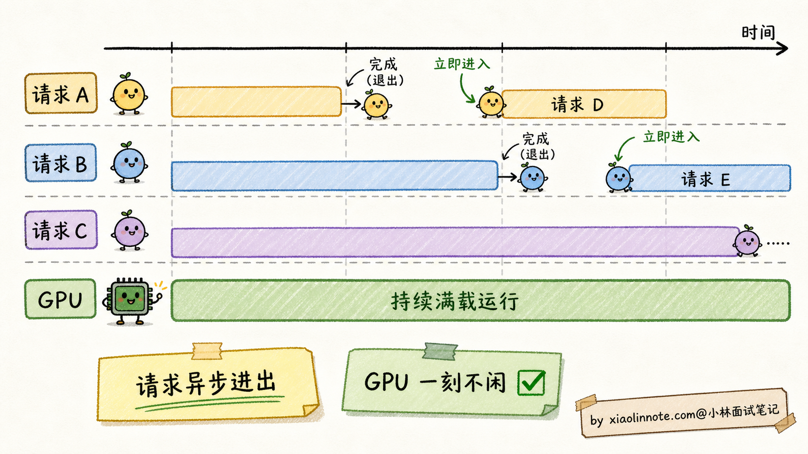
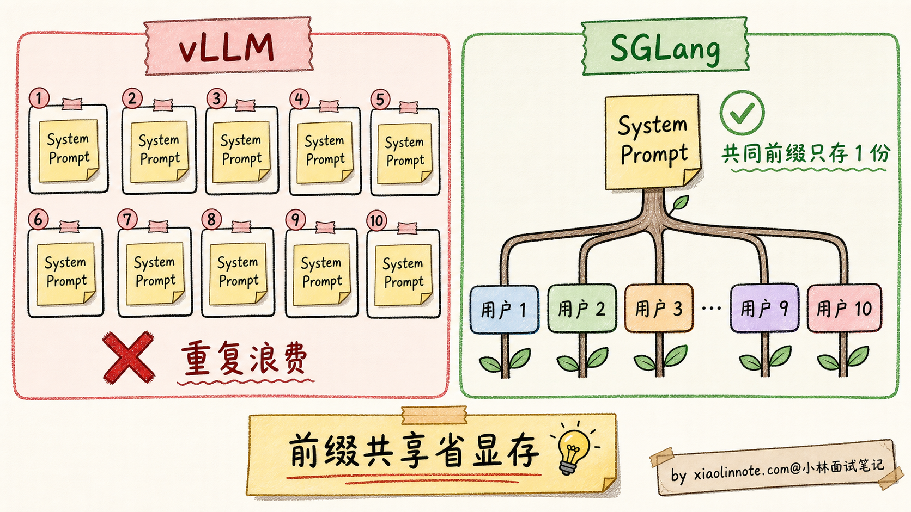
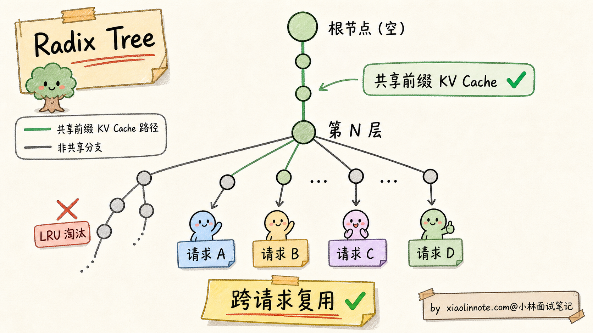
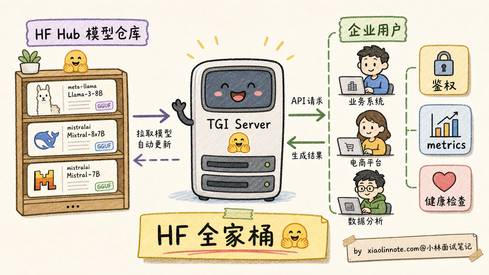
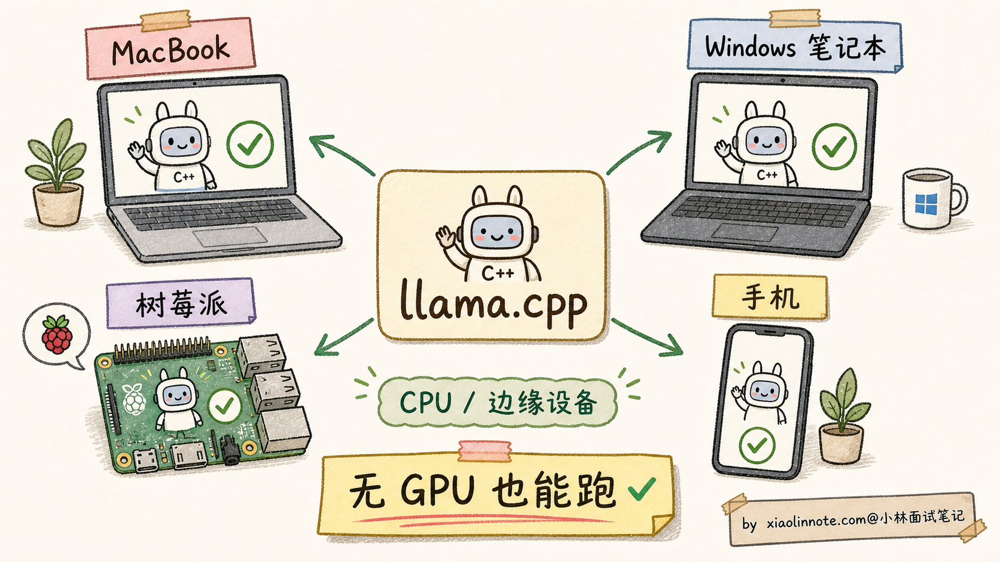
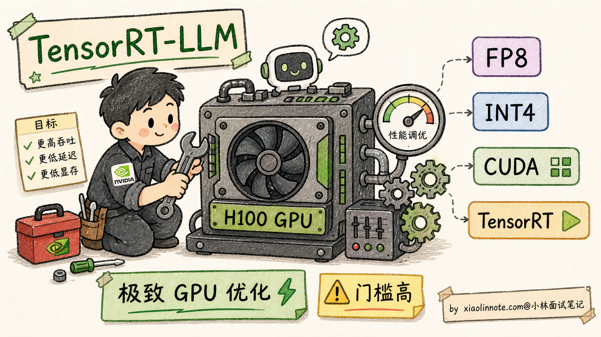
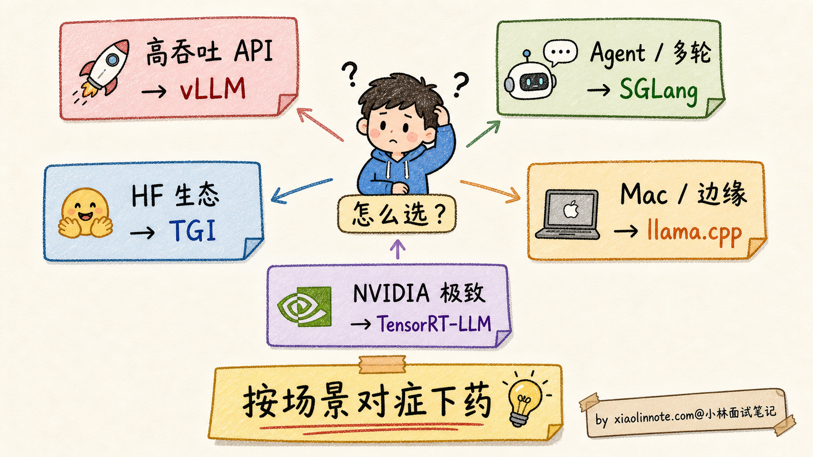
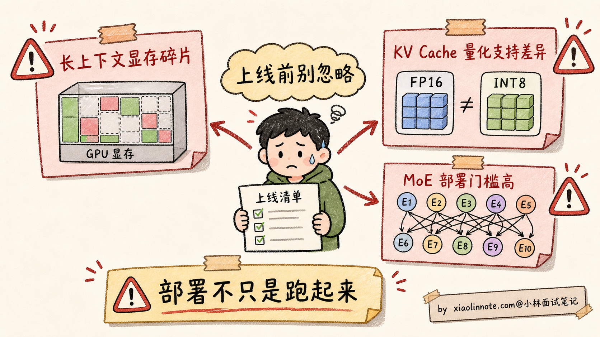

大模型部署有哪些主流方案？vLLM、TGI、llama.cpp、SGLang 实际项目里怎么选？
👔面试官：来讲讲大模型部署有哪些主流方案？vLLM、TGI、llama.cpp、SGLang 这几个怎么选？
🙋♂️我：vLLM 用来部署大模型推理，速度快；llama.cpp 是 CPU 推理；TGI 和 SGLang 我没用过。
👔面试官：……「速度快」是表面话，vLLM 凭什么比直接用 transformers 库快？PagedAttention 是什么？为什么这个名字叫「Paged」？
🙋♂️我：哦哦，应该是分页管理 KV Cache 吧，类似操作系统的虚拟内存？
👔面试官：方向对，但具体怎么 Paged 你能讲清楚吗？再说，SGLang 的 RadixAttention 和 vLLM 的 PagedAttention 是什么关系？为什么 SGLang 在 Agent / 多轮对话场景比 vLLM 更省？
🙋♂️我：呃……RadixAttention 我不太熟。
👔面试官：RadixAttention 是 SGLang 的核心创新，把 KV Cache 组织成共享前缀树（Radix Tree），让多个请求的相同前缀只存一份。这个对 Agent / Few-shot Prompt 这种「前缀重复率高」的场景特别有效。这种细节都不知道，去面试就是被怼。回去补一下。
面试官这一连串追问其实在敲打同一件事，推理框架不是「随便挑一个跑起来」就行。每家解决的核心痛点不一样，PagedAttention、RadixAttention、CPU 量化背后各有一套设计哲学，得对着场景一个个对上。
💡 简要回答
我理解大模型部署框架的本质问题是：怎么在固定的硬件上跑得更快、更省显存、支持更多并发用户？
主流框架按定位分四类。
1. vLLM：当前生产部署里很常见的框架，UC Berkeley 出品。核心创新是 PagedAttention，把 KV Cache 像操作系统虚拟内存一样分页管理，大幅减少碎片，显存利用率能明显提高。配合 Continuous Batching 实现很高的吞吐量，是很多团队部署 LLM API 时会优先评估的方案。
2. SGLang：vLLM 之后的新一代推理框架，LMSYS 出品。核心创新是 RadixAttention，把多请求的共享前缀（如 System Prompt、Few-shot 示例、对话历史）组织成树结构，相同前缀只存一份 KV Cache。在 Agent、多轮对话、批量 Prompt 场景下比 vLLM 显存更省、首 token 延迟更低。
3. TGI（Text Generation Inference）：HuggingFace 出品，与整个 HF 生态深度集成。优点是开箱即用、支持各种 HF Hub 上的模型、企业级 API 接口（鉴权、metrics、健康检查）。但要注意它近两年的增长势头不如 vLLM / SGLang，选它更多是看中 HF 生态和既有系统集成，而不是追求极致性能。
4. llama.cpp：CPU / 边缘设备部署的事实标准。用 C++ 重写整个推理栈，配合 GGUF 量化文件格式，可以让 7B 模型在 MacBook Pro 上跑、在树莓派上跑、在手机上跑。是个人开发者和边缘部署的首选。
怎么选：
- 生产高吞吐 LLM API：vLLM 默认
- Agent / 多轮对话 / Few-shot：SGLang 更省
- 拥抱 HuggingFace 生态、企业级：TGI
- 本地 / Mac / 边缘 / 无 GPU：llama.cpp
- 极致性能、自家定制：TensorRT-LLM（NVIDIA 官方）
📝 详细解析
部署框架解决的核心问题
要理解为什么需要 vLLM、SGLang 这些专门的部署框架，得先看看「直接用 transformers 库跑模型」会有什么问题。
最朴素的部署方式是写个 Python 脚本，加载 HF transformers 的 AutoModelForCausalLM，调 model.generate()。能跑起来，但效率会很糟糕，三个核心痛点：
1. KV Cache 显存碎片严重
每来一个请求，朴素实现会预分配「最大可能长度」（比如 4096 tokens）的 KV Cache 显存。但实际上大多数请求只用 200-500 tokens，剩下的 3500+ tokens 显存就空着浪费了。一台 80GB H100 理论能跑 100 个并发请求，实际只能跑 30 个，显存白白浪费 60-70%。
2. 批量推理调度低效
朴素批量处理（static batching）是「凑齐 N 个请求一起跑、所有请求一起结束」。但每个请求生成长度不同（有的 50 tokens 就完了、有的要 1000 tokens），短的请求等长的请求，GPU 大量时间在「跑了一半在等」。吞吐率上不去。
3. 重复计算
如果每个用户都用同一段 System Prompt（比如 1000 tokens 的产品知识库），朴素实现每次都要重新算这 1000 tokens 的 KV Cache，浪费极大。

部署框架就是为了解决这三个痛点。三大优化方向：内存高效（显存碎片）+ 批量调度（吞吐率）+ 缓存复用（重复计算）。每个主流框架在这三个方向上都有自己的创新。
vLLM 与 PagedAttention：操作系统虚拟内存的灵感
vLLM 是 UC Berkeley 在 2023 年开源的推理框架，一出来就把行业标准提了一个量级。核心创新是 PagedAttention。
PagedAttention 的灵感来自操作系统的虚拟内存（Virtual Memory）。
操作系统怎么管理内存？不是给每个进程预分配大块连续物理内存（这样会有大量碎片），而是把物理内存切成固定大小的「页（Page）」，每个进程拿到的是「逻辑地址」，通过页表（Page Table）映射到真实的物理页。这样物理内存可以充分利用，不浪费。
PagedAttention 把这个思路搬到 KV Cache 上：
- 把 GPU 显存切成固定大小的「Block」（典型大小 16 个 token 的 KV）
- 每个请求拿到的是「逻辑 KV 序列」，由一张 Block Table 映射到具体的物理 Block
- 一个请求实际用了 200 tokens 就只占 13 个 Block（200/16），用完即释放
- 没有「预分配 4096 但只用 200」的浪费

实测下来 PagedAttention 把显存利用率从 30-40% 拉到 90%+，同样硬件下能跑 2-4 倍并发请求。
vLLM 还有第二个杀手锏：Continuous Batching（连续批处理）。
朴素 static batching 是「凑齐 N 个请求一起跑、跑完一起结束」。Continuous Batching 是「请求异步加入和退出，每个 token 步骤动态组 batch」。比如：
- 时刻 t1：请求 A、B、C 同时在跑
- 时刻 t5：A 生成完了退出，立刻有新请求 D 加入
- 时刻 t8：B 也生成完了退出，新请求 E 加入
- 这样 GPU 一刻不闲，吞吐率比 static batching 高 3-5 倍

vLLM = PagedAttention（显存高效）+ Continuous Batching（吞吐高效），是当前生产环境部署 LLM API 的事实标准。OpenAI、Anthropic 等厂商虽然没开源他们的内部推理栈，但据传也用了类似的优化思路。
SGLang 与 RadixAttention：共享前缀的杀手锏
SGLang 是 LMSYS（创建 Vicuna、Chatbot Arena 的团队）在 2024 年推出的新一代推理框架。它不是要替代 vLLM，而是针对 vLLM 没解决好的特定场景：多请求共享前缀。
什么场景下「共享前缀」很常见？
- System Prompt 共享：所有用户调用同一个 API，System Prompt 完全一样（几千 tokens）
- Few-shot Examples 共享：Prompt 里有 5-10 个固定示例，每个用户的查询前面都附带这些示例
- 多轮对话历史：同一用户的多轮对话，每轮都包含前 N 轮的完整历史
- Agent 工作流：Agent 调用 LLM 多次，每次的上下文都从同一个 System Prompt 开始
vLLM 的 PagedAttention 虽然显存高效，但不同请求的 KV Cache 仍然各存各的。10 个用户都用同样的 1000 tokens System Prompt，vLLM 要存 10 份相同的 KV Cache。
SGLang 的核心创新 RadixAttention 把这个问题解决了。

RadixAttention 用的是计算机科学里的经典数据结构 Radix Tree（基数树）：
- 把 KV Cache 组织成一棵树
- 树的根节点是空（无 token）
- 每个请求的 token 序列从根节点开始往下走
- 多个请求如果开头 N 个 tokens 一样，就共享根节点到第 N 层的同一条路径
- 第 N+1 层开始分叉，各自存独立部分
这样 KV Cache 显存按「所有请求的并集」算，而不是「所有请求各自的并集和」。在前缀重复率高的场景下，显存能省下 50-80%。
更妙的是，RadixAttention 还能自动复用历史请求的 KV Cache。如果 1 小时前有用户问过相同 System Prompt 的问题，那段 KV Cache 还在 GPU 显存里（按 LRU 淘汰），新用户直接复用，省去重新计算的几百 ms 延迟。

实测在 Agent 场景（多次调用同一个 System Prompt）下，SGLang 比 vLLM 首 token 延迟降低 2-3 倍、吞吐量提升 30-50%。所以现在 Agent 框架（LangGraph、AutoGen 等）都开始把 SGLang 作为推荐推理后端。
但要注意：纯单请求、无前缀共享场景下，SGLang 相对 vLLM 优势不明显。两者目前是互补关系不是替代关系。
TGI：HuggingFace 生态集成方案
TGI（Text Generation Inference）是 HuggingFace 在 2022 年推出的推理服务，专门为「让 HF Hub 上的模型一键部署成生产 API」设计。
它的核心卖点不是绝对性能，而是生态集成 + 企业级特性：
生态集成：
- 直接读 HF Hub 的模型 ID，自动下载部署，不用手动转格式
- 支持 HF 各种格式（safetensors、quantization 配置）
- 兼容 HF transformers 的 tokenizer 和 chat template
企业级特性：
- HTTP / gRPC 双协议
- 鉴权（API Key、JWT）
- Prometheus metrics
- 健康检查、优雅重启
- 流式响应（SSE）
性能层面：
- 也支持连续批处理、量化、流式输出等生产服务常用能力
- 但在很多公开对比和工程实践里，极致吞吐通常不如 vLLM / SGLang
- 胜在 HuggingFace 生态集成、服务接口和已有企业流程迁移成本低

适合用 TGI 的场景：
- 公司本来就用 HuggingFace 全套（数据集 / Transformers / Hub）
- 需要快速 POC，不想折腾推理框架
- 要部署的模型在 HF Hub 上有现成的，不想自己转格式
- 需要企业级特性（鉴权、metrics、可观测性）
llama.cpp：CPU / 边缘设备的事实标准
llama.cpp 是 Georgi Gerganov 在 2023 年初个人项目开始的，现在已经是「让大模型在非 GPU 设备上跑」的事实标准。
它的核心思路和 vLLM/TGI 完全不同：用纯 C++ 重写整个推理栈，零依赖，最大化 CPU 性能。
为什么要这样做？因为绝大多数个人设备没有 GPU：
- MacBook Pro（M1/M2/M3 芯片，统一内存架构）
- Windows 笔记本（集成显卡）
- 树莓派、Jetson 等嵌入式设备
- 手机（iPhone、Android）
llama.cpp 的几个关键技术：
1. GGUF 文件格式
llama.cpp 自定义的模型存储格式，把模型权重 + 量化方案 + 元数据打包到一个文件。常见的 GGUF 量化档位：
- Q8_0：8-bit 量化，几乎无损
- Q5_K_M：5-bit 量化，精度和体积平衡
- Q4_K_M：4-bit 量化，最常用，体积压到 1/4
- Q3_K_S：3-bit 量化，极端压缩，精度有损失
2. SIMD 优化
针对各种 CPU 指令集（AVX2、AVX512、ARM NEON）做手工优化的矩阵乘法 kernel，CPU 推理速度能跑到 GPU 的 30-50%（虽然不如 GPU，但对个人使用足够）。
3. Metal 后端（Apple Silicon）
苹果 M 系列芯片的统一内存架构特别适合 llama.cpp。M3 Max（128GB 统一内存）能跑 70B 模型，速度可观。这让 llama.cpp 在 Mac 用户中极其流行。

适合用 llama.cpp 的场景：
- 个人开发者本地玩模型
- Mac 用户想充分利用 M 系列芯片
- 边缘 / 嵌入式部署
- 离线场景（没网也能用）
- 隐私敏感场景（数据不出设备）
不适合的场景：
- 高并发生产 API（CPU 吞吐量上不去）
- 需要 batch 处理（llama.cpp 的批量支持较弱）
- 多卡 GPU 集群（不是它的设计目标）
TensorRT-LLM：NVIDIA 官方极致优化
最后简单提一下 NVIDIA 自家的 TensorRT-LLM。它的定位很特殊：针对 NVIDIA GPU 做极致优化，不考虑跨平台。
核心特点：
- 对每个具体 GPU 型号（A100 / H100 / H200）做硬件级别 fine-tuning
- 集成 NVIDIA 自家的内核库（cuBLAS、cuDNN、TensorRT）
- 支持 FP8、INT4 等所有 NVIDIA 硬件支持的精度
- 性能通常比 vLLM 再高 10-30%
代价：
- 开源但工程门槛高，部署相对复杂（需要先编译 engine）
- 只支持 NVIDIA GPU，AMD / Apple Silicon 不行
- 文档生态不如开源框架活跃
适合：
- 有 NVIDIA 大集群的大厂（字节、腾讯、阿里等）
- 追求极致 GPU 利用率
- 愿意承担额外的工程复杂度

怎么选部署方案：决策矩阵
把上面几个框架放一起对比：
| 框架 | 核心创新 | 最佳场景 | 性能 | 生态 |
|---|---|---|---|---|
| vLLM | PagedAttention + Continuous Batching | 高吞吐 LLM API | 极高 | 开源活跃 |
| SGLang | RadixAttention（共享前缀） | Agent / 多轮 / Few-shot | 极高（特定场景超 vLLM） | 较新但快速增长 |
| TGI | HF 生态集成 | 企业级 + HF 生态 | 高 | HF 全家桶 |
| llama.cpp | C++ 重写 + GGUF | CPU / Mac / 边缘 | CPU 上极强 | 个人 / 边缘 |
| TensorRT-LLM | NVIDIA 硬件极致优化 | 大厂 NVIDIA 集群 | 极高（特定硬件上很强） | NVIDIA 官方开源 |

实战中常见的几个误用陷阱：
误用 1：用 vLLM 跑 Agent 多轮对话
Agent 场景前缀重复率高，vLLM 没有 RadixAttention 优化，每次重新算 KV Cache 浪费大量算力。改用 SGLang 后首 token 延迟降 2-3 倍。
误用 2：用 llama.cpp 做高并发服务
llama.cpp 的批量调度比 vLLM 弱很多，并发上去后吞吐率瓶颈。生产 API 服务还是要用 GPU + vLLM。
误用 3：用 TGI 追求绝对性能
如果你的瓶颈是 GPU 吞吐量，TGI 通常不是第一选择，应该优先评估 vLLM、SGLang 或 TensorRT-LLM。具体差距会随模型、硬件、量化方式和 batch 策略变化，不要死记一个固定百分比。
误用 4：用 TensorRT-LLM 做快速 POC
TensorRT-LLM 部署需要先编译 engine（每个模型 / GPU 组合都要编译），不适合「快速试验、模型经常换」的场景。
部署的三大隐藏陷阱
最后讲三个具体上线时容易踩的坑，作为面试加分项。
陷阱 1：显存碎片在长上下文场景下还是会出现
PagedAttention 大幅缓解了显存碎片，但不是完全消除。当请求长度极不均匀（有的 100 tokens、有的 100K tokens），仍然会有 5-10% 的碎片。应对：监控 GPU 显存利用率，如果跌破 70% 考虑加 swap 或调整 max-model-len。
陷阱 2：KV Cache 量化的支持差异大
权重量化（FP16 -> INT4）很多框架都支持，但 KV Cache 量化（FP16 -> INT8 / FP8 / INT4）的支持差异很大，而且版本迭代很快。vLLM、SGLang、TensorRT-LLM 都在持续增强这块能力，TGI 和 llama.cpp 的支持方式也要看具体版本。如果你的瓶颈是长上下文 KV Cache 显存，选型前一定要查当前版本文档，别只听别人说「支持」。
陷阱 3：MoE 模型的部署支持差异
MoE 模型（DeepSeek V3、Mixtral）部署比 Dense 复杂得多（需要专家并行、All-to-All 通信优化）。vLLM 和 SGLang 都支持但配置复杂；llama.cpp 通过 GGUF 支持但性能一般；TensorRT-LLM 支持最好但工程门槛高。如果要部署 MoE 模型，建议先在测试环境跑通再上生产。

🎯 面试总结
回到开头那段对话，问到部署方案，最重要的是先讲清楚部署框架解决什么问题。直接用 transformers 库部署有三大痛点：显存碎片严重、批量调度低效、共享前缀重复计算。每个主流框架的核心创新都是攻击这些痛点的某个维度。这一层铺垫先讲到，面试官就知道你不是在背工具，是真的理解部署框架的设计动机。
接下来把四个主流框架的核心创新讲明白。vLLM 的杀手锏是 PagedAttention（模仿操作系统虚拟内存的分页 KV Cache，把显存利用率从 30% 拉到 90%+），加上 Continuous Batching 让请求动态进出，是当前生产 API 的常见选择。SGLang 走的是另一条路，核心创新是 RadixAttention（共享前缀的 KV Cache 树），在 Agent 和多轮对话场景下经常能降低首 token 延迟。TGI 的特点是和 HuggingFace 生态深度集成，适合已有 HF 流程的团队。llama.cpp 是另一种风格，纯 C++ 重写 + GGUF 量化，是 CPU / Mac / 边缘部署的事实标准。
然后给清晰的选型决策。生产 API 高吞吐选 vLLM；Agent / 多轮对话场景选 SGLang；HuggingFace 生态深用户选 TGI；本地 / Mac / 边缘部署选 llama.cpp；NVIDIA 集群追求极致性能选 TensorRT-LLM。能把「SGLang 在前缀共享场景比 vLLM 强」这一点说清楚，是面试加分项，因为这是 2024 年之后才出现的工程认知。
最关键的是讲清部署陷阱：显存碎片在长上下文场景还会出现、KV Cache 量化各框架支持差异大、MoE 模型部署比 Dense 复杂得多。能讲到这一层，面试官就知道你真的踩过部署的坑。
如果还想再加分，可以提一句 vLLM 和 SGLang 是「互补不替代」的关系，业内已经有公司开始混用（高吞吐路由用 vLLM，Agent 路由用 SGLang）。这种「一线工程视角」会让面试官印象深刻。